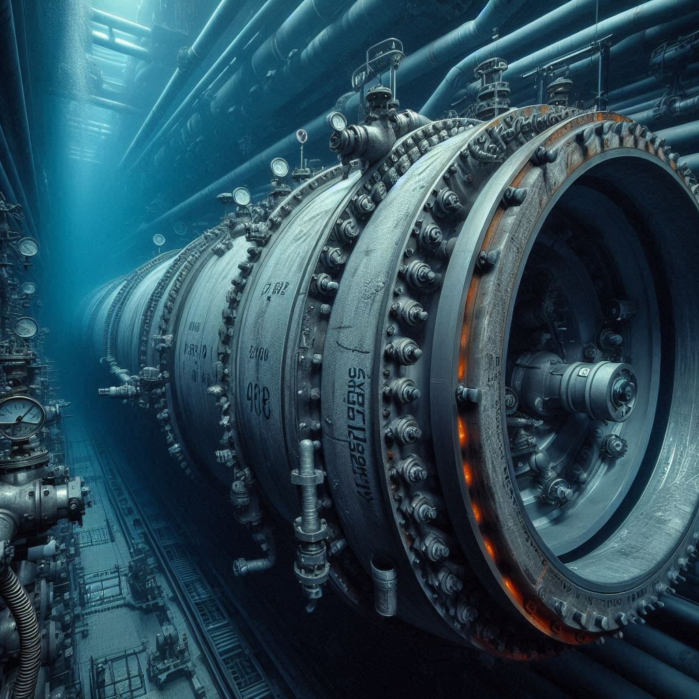

Resumen Ejecutivo
Versión: 4.0 Revisada | Fecha: Marzo 2026 | Autor: Sebastián
🗣️ En lenguaje sencillo
¿Qué es esto? Una central que convierte la presión natural del océano profundo en electricidad, sin depender del sol, el viento o las mareas.
¿Por qué importa? Ofrece energía base — siempre disponible — a un coste competitivo, sin ocupar tierra ni emitir CO₂.
❓ Preguntas frecuentes
¿Y si no hay suficiente presión?
La presión a 500m es constante: ~50 atm, las 24 horas. No depende del clima, solo de la profundidad. Es física básica, no meteorología.
¿Es seguro operar a esa profundidad?
En v2.0, los componentes críticos están en superficie. Solo la tubería de entrada está sumergida — un componente pasivo sin partes móviles.
¿Ya se ha hecho algo parecido?
La física sí (tuberías petroleras, fuentes artesianas). Pero esta arquitectura específica — cámara de vacío + turbina Pelton marina integrada — es novedosa y patentable.

1. Concepto en una Frase
Extraer energía eléctrica continua (24/7) del océano aprovechando diferencias de presión controladas entre el fondo marino y la superficie, sin dependencia del clima ni ciclos de mareas.
2. Innovación Clave
A diferencia de otros sistemas marinos, este proyecto utiliza:
- Presión marina natural (50 atm a 500m)
- Cámara de presión diferencial controlada (0.7 atm)
- Turbina Pelton submarina
- Sistema de sifón para desalojo
- Bomba vacío para mantener diferencial
- RESULTADO: ~26 MW netos, 24/7, disponibilidad 95%+
3. Ventajas vs Alternativas
| vs Alternativa | Ventaja |
|---|---|
| Eólica marina | 2.3× más barato (€28-45/MWh vs €95/MWh) |
| Solar | 1.5× más barato, 4× más disponibilidad (95% vs 25%) |
| Mareas | Independiente de ubicación geográfica |
| OTEC | 15× más potencia (26 MW vs 1-2 MW) |
| Hidroeléctrica conv. | No requiere embalse, sin desplazamiento |
4. Números Clave
| Parámetro | Valor |
|---|---|
| Profundidad operativa | 500 m |
| Diámetro tubería | 2.0 m |
| Presión entrada | 50 atm (fondo marino) |
| Presión cámara | 0.7 atm (controlada) |
| Diferencial neto | 49.3 atm |
| Caudal continuo | 7.85 m³/s |
| Generación neta | 26.5 MW (después de costes energéticos) |
| Factor de capacidad | 95% |
| Energía anual | 220 GWh |
| CAPEX realista | €70-80 M (solo generación) / €89 M (con OI) |
| OPEX anual | €8-10 M |
| LCOE | €35-45/MWh |
| Payback | 8-10 años (sin sequía) / 2.8 años (promedio) |
5. Ubicación Propuesta
Costa de Huelva, España (Atlántico)
- Profundidad: 500-700m a 30-40 km de costa
- Temperaturas estables
- Sin huracanes extremos
- Acceso a puerto de servicios
6. Fases de Desarrollo
| Fase | Presupuesto | Duración | Objetivo |
|---|---|---|---|
| Fase 0 (Validación) | €9M | 22 meses | Piloto de 5 MW |
| Fase 1 (Planta comercial) | €89M | 36 meses | Planta 26 MW + OI 100k m³/día |
| Fase 2 (Segunda unidad) | €85M | 36 meses | Replicación Huelva/Cádiz |
| Fase 3+ (Expansión) | €400M | — | 5-6 plantas España |
7. Riesgos Identificados
- TÉCNICOS: Hermeticidad cámara, cavitación, corrosión marina
- ECONÓMICOS: Costes de instalación submarina, sobrecostes típicos marina
- REGULATORIOS: Permisos ambientales, derechos de explotación marina
8. Viabilidad Física
- ✅ Teoría: Diferencia de presión genera flujo continuo (Bernoulli)
- ✅ Precedentes: Tuberías petróleo (50+ años), sistemas desalinización
- ✅ Tecnología: Turbinas, bombas vacío, tuberías marinas existen
- ⚠️ Complejidad: Hermeticidad es crítica, mantenimiento submarino
- ⚠️ Validación: Requiere piloto para confirmar estabilidad a largo plazo
9. Propuesta Inmediata
Buscar €5-8M para Fase 0 (validación piloto 5 MW, presupuesto total €9M):
- Objetivo: Confirmar física del sistema
- Duración: 18 meses
- Resultado: Datos reales para decisión escala comercial
- Riesgo: Bajo (solo validación, sin comprometer viabilidad)
10. Conclusión
Proyecto viable, documentado, listo para validación experimental. No es la "revolución energética", es una oportunidad de negocio legítima en tecnología marina con LCOE competitivo y disponibilidad superior a todas las alternativas renovables actuales.